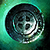

 Provisioner Tokens
Utilisation
Mainly for Gift of Craftsmanships , which each costs 50 Provisioner Tokens .
Acquisition
Listed are the more reasonable exchanges, but this does not necessarily mean they all are the best ones.
.png) Lion's Arch
:
Lion's Arch
: [&BAwEAAA=]
Black Citadel
: [&BKgDAAA=]
The Grove
: [&BLsEAAA=]
Verdant Brink
: [&BN4HAAA=]
- 1 Reclaimed Metal Plate
- 1 Assassin's Krait Machete
- 1 Carrion Krait Slayer
- 1 Valkyrie Krait Shell
- 1 Cleric's Krait Warhammer
Auric Basin
: [&BNYHAAA=]
Tangled Depths
: [&BMwHAAA=]
The Wizard's Tower
: [&BB8OAAA=]
- 1 Charged Quartz Crystal
-
1
 Lump of Mithrillium
Lump of Mithrillium
- 1 Glob of Elder Spirit Residue
- 1 Spool of Thick Elonian Cord
Skywatch Archipelago
: [&BCsOAAA=]
Only three will appear, and only one can be exchanged per day.
- 50 Orichalcum Ore
- 50 Ancient Wood Logs
- 100 Research Notes
- 100 Gossamer Scraps
- 250 Mithril Ore
- 250 Thick Leather Sections
- 250 Elder Wood Logs
- 500 Silk Scraps
Amnytas
: [&BDQOAAA=]
- Same as above
Miscellaneous
- Crafting the weapons: https://www.youtube.com/watch?v=dnfT3_VZhFY&t=281